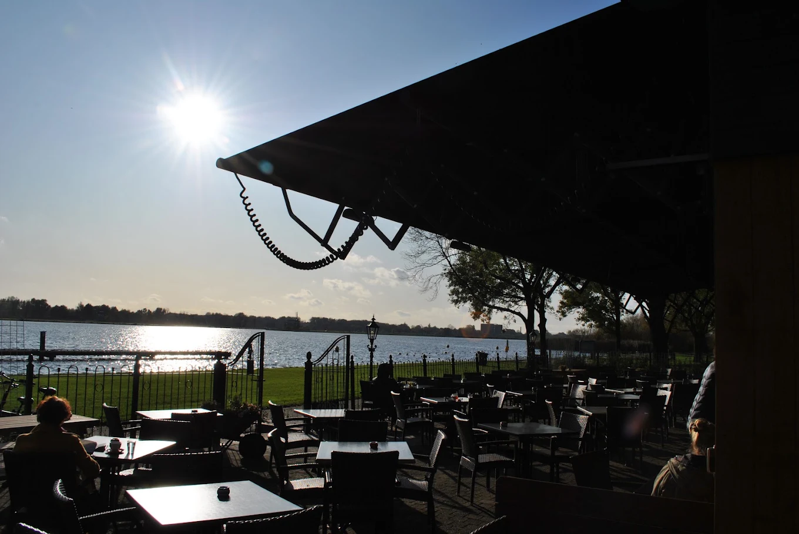
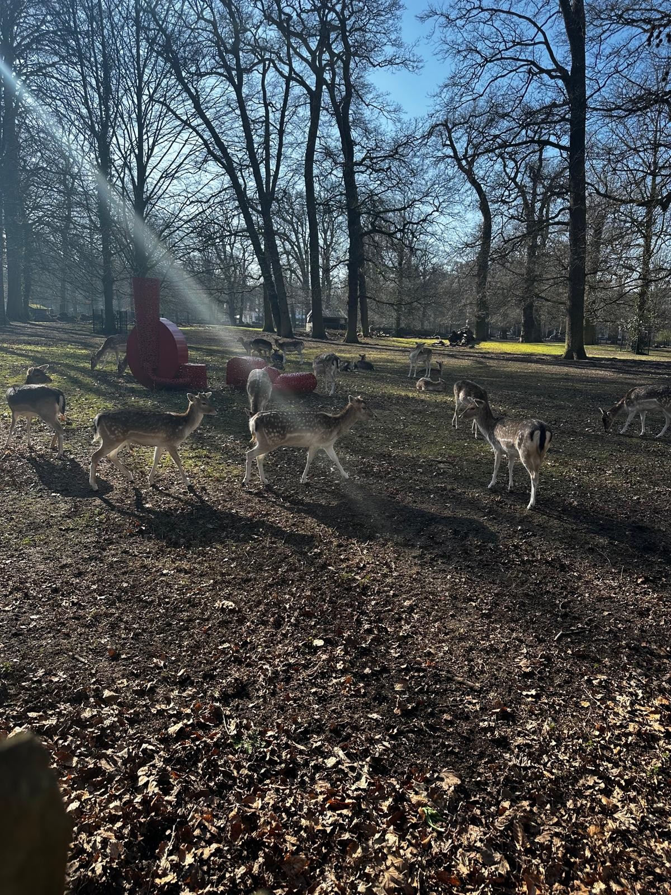
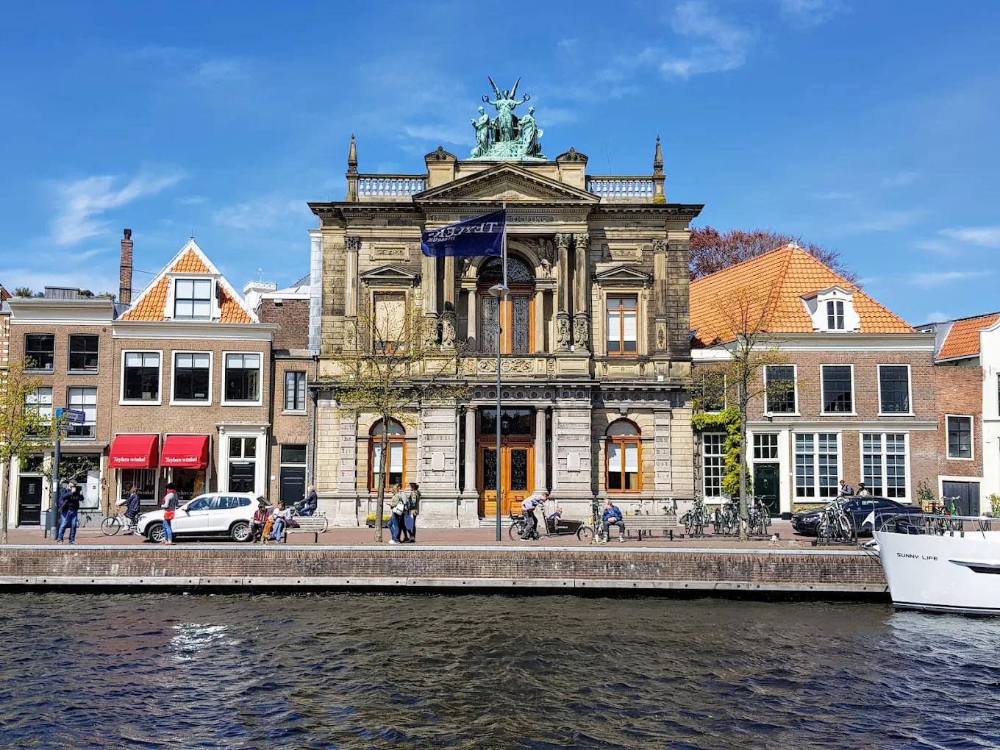

Molenplas
Een ontspannen wandeling langs water en groen, geschikt voor een gezellig familie-uitje.
Bekijk routeOntdek verschillende wandelroutes in Haarlem en kies een wandeling die bij jou past. Of je nu met familie op pad wilt, rust zoekt, dieren wilt bekijken of meer van de historische stad wilt ontdekken, iedere route biedt een andere ervaring.
Bekijk de wandelroutes
Een ontspannen wandeling langs water en groen, geschikt voor een gezellig familie-uitje.
Bekijk route
Een rustige route voor mensen die even willen wandelen en ontspannen in het groen.
Bekijk route
Combineer wandelen met het bekijken van herten in een groene omgeving.
Bekijk route
Ontdek tijdens het wandelen bekende historische plekken in het centrum van Haarlem.
Bekijk route| Route | Voor wie? | Karakter |
|---|---|---|
| Molenplas | Familie & gezinnen | Water en groen |
| Reinaldapark | Rustzoekers | Rust en ontspanning |
| Hertenkamp | Dierenliefhebbers | Dieren en natuur |
| Spaarne | Stad- & cultuurliefhebbers | Geschiedenis en architectuur |